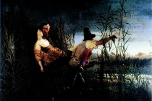

Lezione 16  L'Unità d'Italia
L'Unità d'Italia

-
260
520
-
95
440
-
390
520
-
380
450
-
385
490
-
230
480
-
FIUME VOLTURNO
Il visionario pittore e pioniere della fotografia napoletano Filippo Palizzi ritrae le camicie rosse garibaldine nei momenti che precedono la battaglia del Volturno. Ammirevole è nel dipinto la rinuncia a qualsiasi enfasi retorica: i garibaldini appaiono piuttosto come eroi loro malgrado, in un paesaggio di nuvole e di polvere.
-

COMACCHIO
Garibaldi e il maggiore Leggero trasportano Anita morente attraverso le pianure di Comacchio in un dipinto dai toni commossi e raffinati nella resa del paesaggio, opera di Pietro Bouvier, allievo del grande Francesco Hayez.
SICILIA
Un ritratto di Garibaldi realizzato nel 1900 dal pittore bolognese Giovanni Masotti: L' "Eroe dei due mondi" non ha nulla di eroico, a differenza dall'icona quasi agiografica che ricorre in tutte le celebrazioni del Risorgimento. MARSALA
A Marsala sbarcano i Mille: un corpo di volontari provenienti da tutta Italia guidati da Giuseppe Garibaldi. La spedizione era stata proposta a Garibaldi da Francesco Crispi, un patriota siciliano.BRONTE
Nella cittadina di Bronte una rivolta di contadini contro i proprietari terrieri viene repressa nel sangue da un battaglione dell'esercito di Garibaldi guidato da Nino Bixio.TEANO
A Teano si incontrano Garibaldi e Vittorio Emanuele II. Il primo aveva conquistato l'Italia meridionale, dal nord Vittorio Emanuele era disceso annettendo al Piemonte le Marche e l'Umbria.